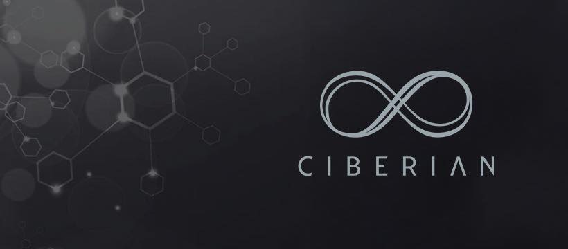

A Ciberian é uma empresa brasileira de tecnologia com mais de 20 anos de atuação, especializada em soluções que integram pessoas, processos e tecnologia para acelerar a transformação digital de organizações públicas e privadas.
Visitar site oficialFundada em 2001, a Ciberian atua no setor de Tecnologia da Informação e Comunicação, oferecendo serviços de desenvolvimento de software, consultoria, service desk e outsourcing de TI.
Com foco em inovação e qualidade, a empresa adota melhores práticas e padrões reconhecidos no mercado para entregar soluções confiáveis e alinhadas aos objetivos estratégicos de seus clientes.
Criação e manutenção de sistemas sob medida para apoiar processos de negócio, com foco em qualidade, performance e segurança.
Apoio especializado para planejamento, arquitetura e gestão de ambientes de TI, conectando estratégias de negócio e tecnologia.
Atendimento estruturado aos usuários, garantindo continuidade das operações e melhoria da experiência em serviços de TI.
Alocação de equipes e especialistas para apoiar projetos e operações, permitindo que empresas foquem em seu core business.
Mais de duas décadas de atuação em projetos de tecnologia e transformação digital em diferentes segmentos.
Processos apoiados em políticas de qualidade, segurança da informação, ética e compliance corporativo.
Cultura que valoriza o aprendizado contínuo, desenvolvimento de talentos e fortalecimento das relações humanas.
Este é apenas um exemplo educacional de landing page para treinar Git. Para informações oficiais, consulte o site da empresa em: www.ciberian.com.br .